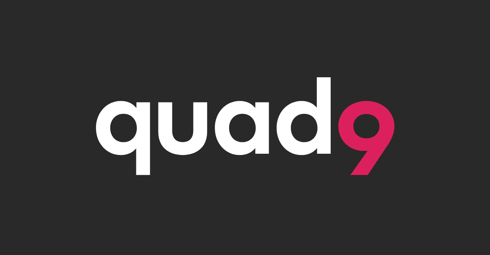

Language Desk · The Lead · Follow-Up
trynix.dev runs a full Linux desktop in a browser tab for a second day — and the browser-in-a-browser now runs
Farid Zakaria’s reply to a 2015 talk that imagined all software in JavaScript by 2035 doubles to 912 points: a kernel compiled to WebAssembly, sound and networking included, Firefox boots on a phone, and the thread re-argues whether WebAssembly counts as JavaScript’s victory
trynix.dev — Farid Zakaria’s browser tab that boots full Linux GUI programs: solitaire, GL gears, xeyes, a voice, the weather over curl, or Firefox — running any of nixpkgs’ 300,000-plus distinct package versions, returned to the top of the front page for a second day at 912 points, up 463 since the morning edition. The engine is unkernel, Linux compiled to WebAssembly, published Nov. 19 by Pooya Parsa, which Zakaria adopted after QEMU-in-the-browser left the creation slow enough to “tip more towards novelty than practicality”; unkernel measures 2x to 32x faster than qemu-wasm depending on workload. A program’s Wayland surfaces are composited into the page, a minimal Mesa renders through WebGL2, an ALSA sound card plays audio, and each TCP connection rides one WebSocket to a Wisp relay.[1]
The post is a reply, eleven years late and right on time, to Gary Bernhardt’s 2015 talk “The Birth & Death of JavaScript,” a retrospective delivered from an imagined 2035 in which everything is written in JavaScript; Zakaria’s reading is that large language models pulled the timeline forward. The talk’s best joke — a browser running inside another browser — now works: “I did not expect someone to get the nested browser-in-a-browser running this soon,” one reader wrote. On a phone, Firefox launched in about 5 minutes, much of it downloading dependencies, in Firefox for Android on 8 GB of RAM — though it did not react to input, the reader noted.[1][2]
The thread’s sharpest correction is taxonomic: “the prediction was about JavaScript. This is WebAssembly. A big part of the reason the timeline accelerated is that the goal post was moved. A lot.” Another reader granted asm.js as “the ‘javascript’ of the presentation” but held that WASM “isn’t JS-level quirky.” The context the thread supplied: trynix is a wrapper around unkernel.dev, and the Wisp relay it uses for networking came from a pre-AI high-schooler project for bypassing school network blocks.[2]
AI Desk · Agents · Follow-Up
The agent that refuses Bandcamp’s bot wall — then downloads the song from YouTube — returns, and the thread tests the guardrail

Michael Harley’s post returned for a second day at 830 points, up 676 since the morning edition. The case: a Claude skill he built to turn Instagram reels into Bandcamp purchases — identify the artist, find the store page, hand back a buy link — hit a challenge Bandcamp added to its search API, and “the robot went on to explain that it would not help me work around the challenge,” while another branch of the same skill, asked for the same song, downloads it from YouTube, “which doesn’t send any money to the band or anyone.” His conclusion is the title: the model works for Anthropic, not for him — and only insofar as “Anthropic or OpenAI or whoever else allows them to.”[3]
The thread generalized the catch, and then tested it. One reader’s Claude refused to heed robots.txt when fetching a page at his direction; his argument, which he stands by: robots.txt “is meant for spiders, not for user-directed requests,” and the LLM acting as his agent is “neither legally nor morally obligated” any more than a browser is. Another cut to the plumbing: “It’s not the model. It’s the harness. It’s also hilariously broken” — a claim of contractual authority (“I am contracted by X to build Y”) or an EU interoperability right, he wrote, “is enough to get by.”[4]
The structural read, from a third reader: “Any for-profit online service is designed to work first and foremost for the parent company,” with “the inevitable enshittification” as the endpoint; the thread’s recurring countermeasure was to run your own open-source agent, so the conversation history and the skills stay on your side of the line.[4]
Security Desk · Policy
Quad9 switches off its DNS resolver for France, refusing all resolution rather than block piracy domains

PARIS — Quad9, the free resolver that filters cyber threats at 9.9.9.9, made good today on its October warning: from 09:00 Central European Time, it disabled service for French users — “any query reaching any Quad9 service address will be refused, and no DNS resolution will be successful.” The cause: demands from beIn, a sports rightsholder, to block domains it claims feed piracy streaming sites, upheld by French courts, with fines for non-compliance. Quad9 is “entirely opposed to piracy,” but says it “has nothing to do with the piracy sites,” and calls demands on recursive resolvers “a futile and counter-productive effort” that has no effect on the origin servers.[5]
The method’s limit is the post’s own admission: geoIP data are “quite imprecise,” and “there is no legally accurate way” to sort French queries from the rest — so the cutoff will overblock and underblock at once. Rather than selectively deny the disputed names to French users — which it says would concede that “DNS blocking is a valid instrument for the piracy problem… it is not” — Quad9 refuses all resolution there, while its 9.9.9.10 endpoint, “with no blocking of any kind,” remains entirely open. One reader confirmed the cutoff live: a dig against 9.9.9.9 returns status REFUSED, with an EDE code reading “Prohibited: Service unavailable due to French legal constraints.”[5][6]
The collateral showed up on the thread as broken home networks — readers’ AdGuard Home and Tailscale setups reported “internet is down” when their upstream went dark. On the choice itself the readers split: one wrote the exit “would have been honorable” only if Quad9 had kept serving France from abroad; another answered that the French position has a case — knowingly helping something illegal “in some minor role,” he argued, “seems impossible to just ignore.” Torrentfreak has posted an update on the exit.[6]